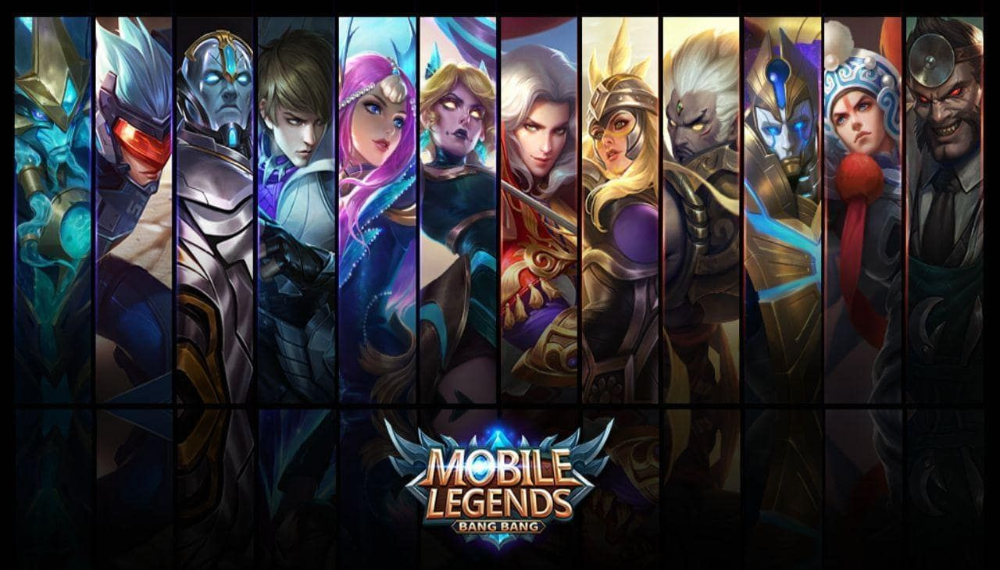
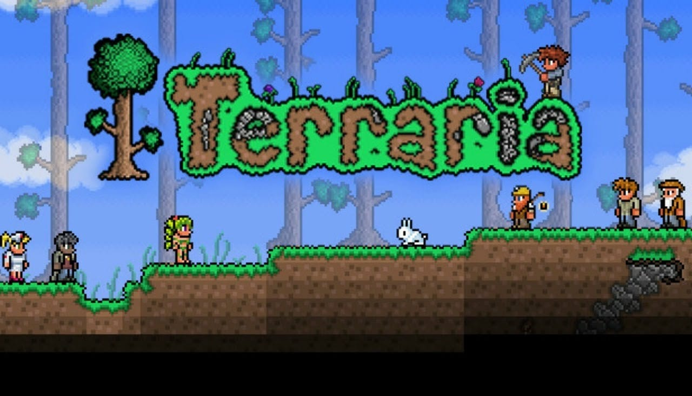

HELLO GAMERS!
Welcome adventurer right in this moment you were wondering what will be the best game to play in this year around.
so by that you travel our website. Don't worry we got you if you look deeper you may see the collection of the best game that
will blow your mind, So what are you waiting for go and explore.
Among Us

Among Us is a multiplayer game where 10 players get dropped into an alien spaceship,
sky headquarters or planet base, where each player is designated with a private role
of either a “crewmate” and an “impostor.” This is an online multiplayer social deduction game,
and a player can either be a crewmate or an imposter.
click this to knom more about the game.
Mobile Legends

Mobile Legends is a 5v5 MOBA for handheld devices that offers a variety of playable heroes, game modes,
and intense, fast-paced gameplay. With controls optimized for touchscreen devices,
players can quickly get set up to play a match against other players in real time. Pros: +Beginner-friendly tutorials.
click this to know more about the game
Call of Duty: Mobile

Call of Duty: Mobile is a free-to-play shooter video game developed by TiMi Studios and published by Activision for Android and iOS.
Released on 1 October 2019, the game saw one of the largest mobile game launches in history, generating over US$480 million with 270 million downloads within a year.
The game was published in other regions by Garena, Tencent Games, and VNG Games.
click this to know more about the game
PUBG Mobile

PUBG Mobile game is a persistent online game, so you'll need a connection to the internet to play
be that via mobile network or Wi-Fi - but the lower the ping the better.
The tech specs for Android are Android 5.1 and higher and at least 2GB of RAM
click this to know more about the game
Terraria

Terraria is a 2D adventure game that is in most ways similar to Minecraft.
You’ll mine resources, craft items, kill bad guys, build stuff, and have all kinds of other fun.
It’s a fun game with a ton of stuff to do and it won’t be hard wasting an afternoon playing it.
You can connect and play with your friends over WiFi as well for enriching gameplay.
click this to know more about the game